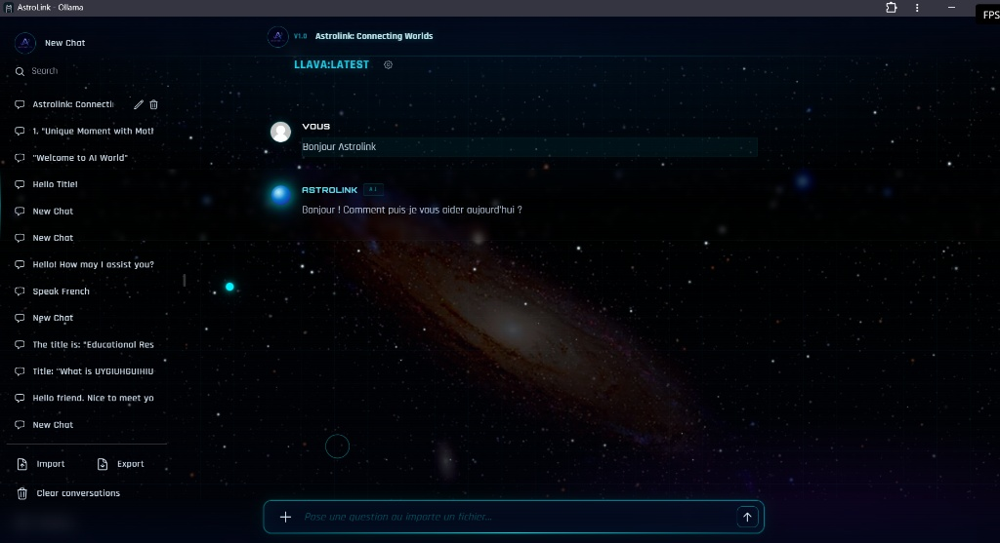

AstroLink — Assistant IA
Neural Interface v1.0 — Interface web interactive pour modèles d'IA locaux via Ollama
Note technique : Interface web sous SvelteKit et Tailwind CSS communiquant en local avec des modèles LLM et Vision via l'API Ollama[cite: 21].

I. Architecture & Fonctionnalités
AstroLink permet d'échanger en toute confidentialité avec des modèles d'IA exécutés en local[cite: 21].
II. Extraits de Code Clés
1. Réception du flux IA (Streaming SSE)
Lecture en direct de la réponse générée mot par mot par l'API Ollama :
// Lecture du flux de réponse renvoyé par Ollama
const reader = res.body
.pipeThrough(new TextDecoderStream())
.pipeThrough(splitStream("\n"))
.getReader();
while (true) {
const { value, done } = await reader.read();
if (done) break;
let data = JSON.parse(value);
responseMessage.content += data.message.content; // Mise à jour en temps réel
}2. Stockage 100% local (IndexedDB)
Sauvegarde des historiques de discussion directement dans le navigateur du client :
// Création du store IndexedDB pour enregistrer les conversations
const DB = await openDB("Chats", 1, {
upgrade(db) {
const store = db.createObjectStore("chats", { keyPath: "id", autoIncrement: true });
store.createIndex("timestamp", "timestamp");
}
});3. Titre automatique par le LLM
Génération d'un titre court résumant le premier message de l'utilisateur :
// Prompt envoyé au modèle pour résumer l'échange en 3 à 5 mots
body: JSON.stringify({
model: selectedModels[0],
prompt: `Generate a brief 3-5 word title for this question: ${userPrompt}`,
stream: false
})III. Démo
Accéder à l'interface en ligne :
Note : L'application est conçue pour communiquer directement avec une instance Ollama locale (exécutée sur votre propre machine). La démo en ligne permet d'explorer l'interface visuelle, mais ne pourra pas générer de réponses sans un serveur Ollama local actif. Il est prévu d'héberger prochainement le modèle en ligne afin de rendre les conversations directement fonctionnelles sur la démo.
 Lancer la démo en ligne →
Lancer la démo en ligne →